Reading the 'BestParameterSet.txt' output file
read_best.RdThis function reads the contents of the the ‘BestParameterSet.txt’ output file, which stores the best parameter set and its corresponding goodness-of-fit value found during the optimisation
Value
a list with the following three elements:
- best.part.number
numeric of length 1, with the number of PSO particle that achieved the best optimisation value.
- best.param.values
numeric with the parameter values of PSO particle that achieved the best optimisation value.
- best.param.gof
numeric of length one with the GoF of the PSO particle that achieved the best optimisation value.
Examples
# \donttest{
local({
# Setting the user temporal directory as working directory
oldwd <- getwd()
on.exit(setwd(oldwd), add = TRUE)
setwd(tempdir())
# Number of dimensions to be optimised
D <- 4
# Boundaries of the search space (Sphere test function)
lower <- rep(-100, D)
upper <- rep(100, D)
# Setting the seed
set.seed(100)
# Runing PSO with the 'Sphere' test function, writting the results to text files
hydroPSO(fn=sphere, lower=lower, upper=upper,
control=list(maxit=100, write2disk=TRUE, plot=TRUE) )
# Reading the best parameter set and its corresponding gof found by hydroPSO
read_best(file="./PSO.out/BestParameterSet.txt")
}) # local END
#>
#> ================================================================================
#> [ Initialising ... ]
#> ================================================================================
#>
#> [npart=40 ; maxit=100 ; method=spso2011 ; topology=random ; boundary.wall=absorbing2011]
#>
#> [ user-definitions in control: maxit=100 ; write2disk=TRUE ; plot=TRUE ]
#>
#>
#> ================================================================================
#> [ Writing the 'PSO_logfile.txt' file ... ]
#> ================================================================================
#>
#> ================================================================================
#> [ Running PSO ... ]
#> ================================================================================
#>


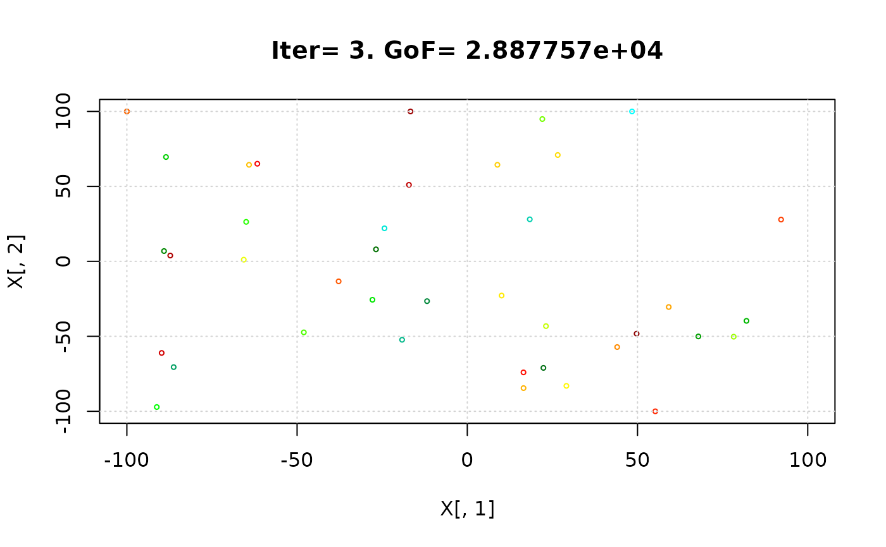


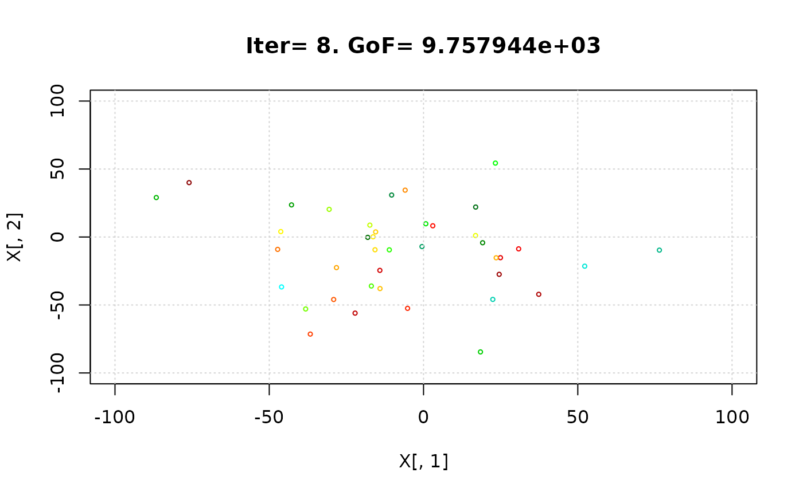


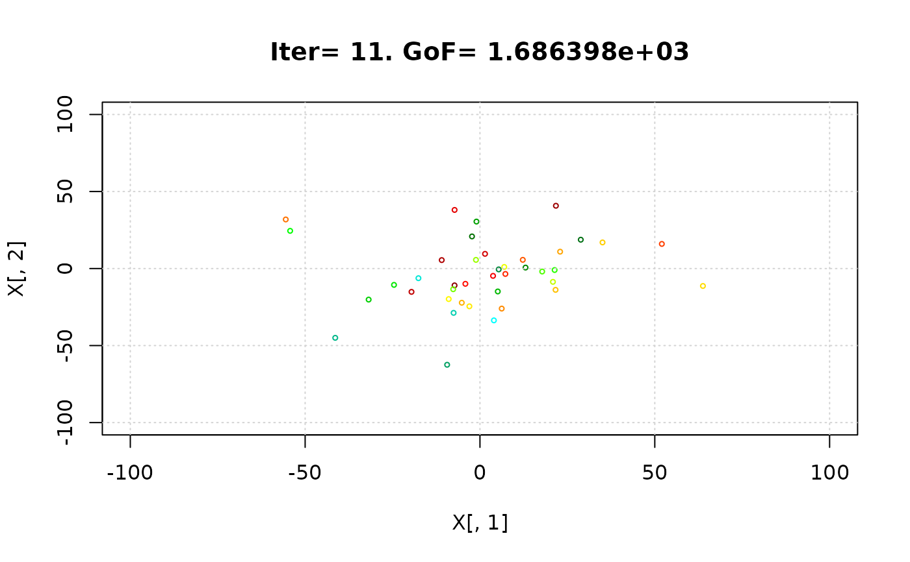


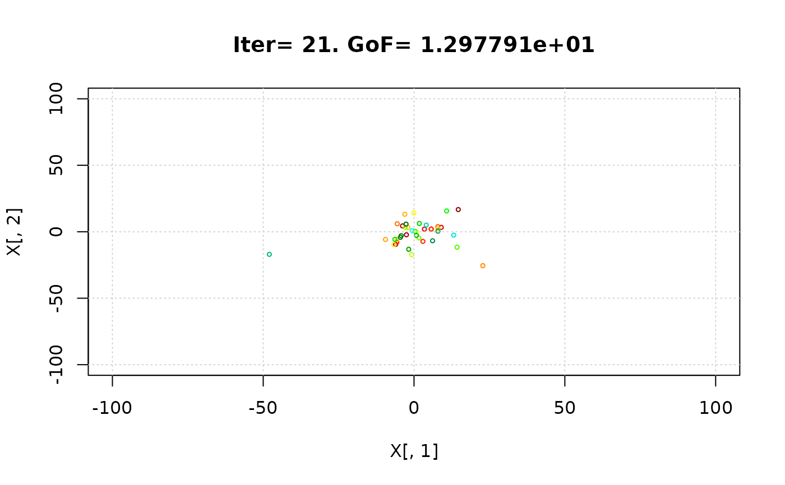
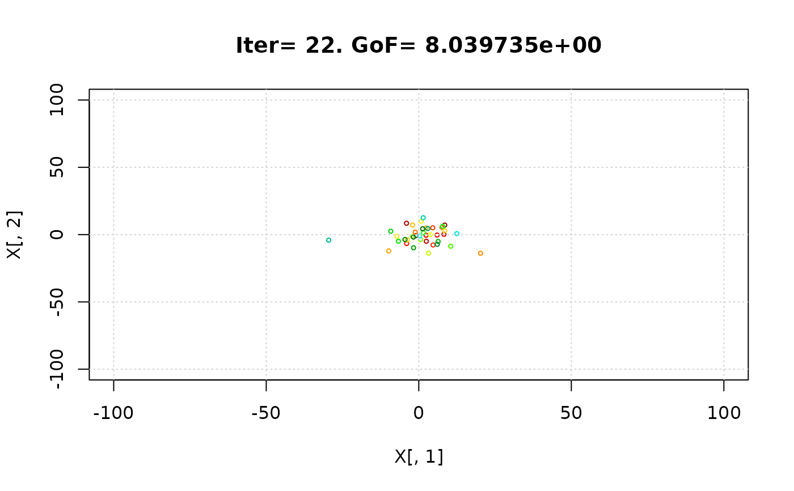


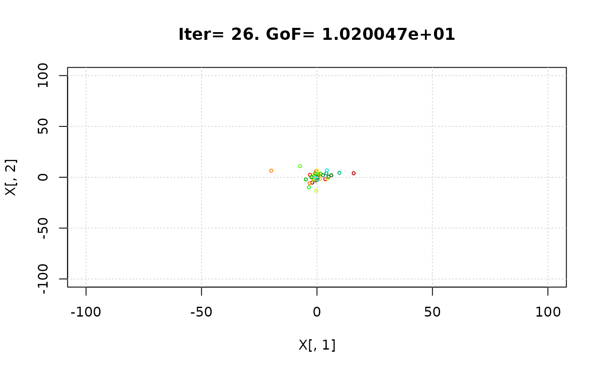


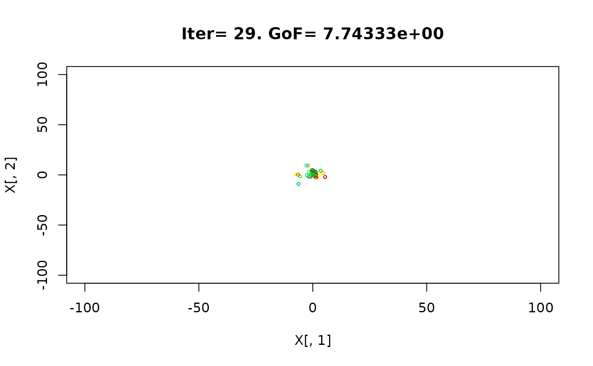


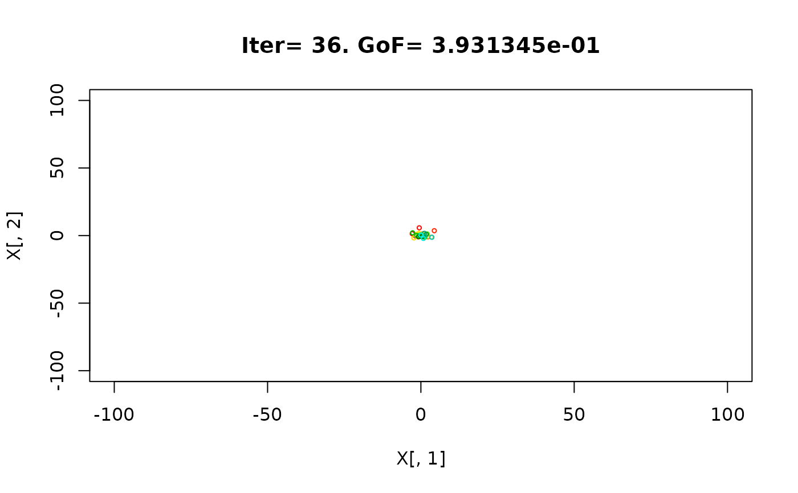


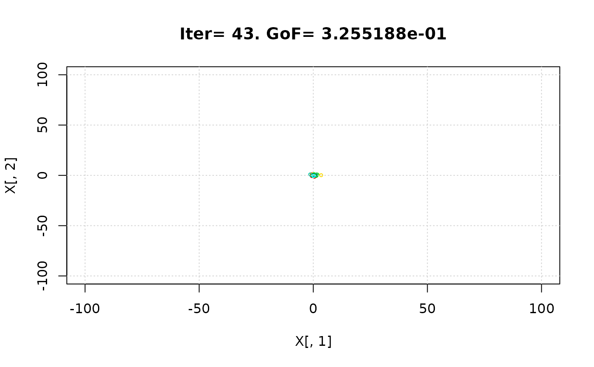


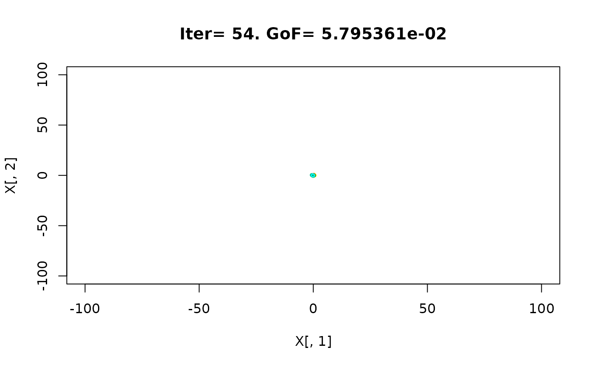

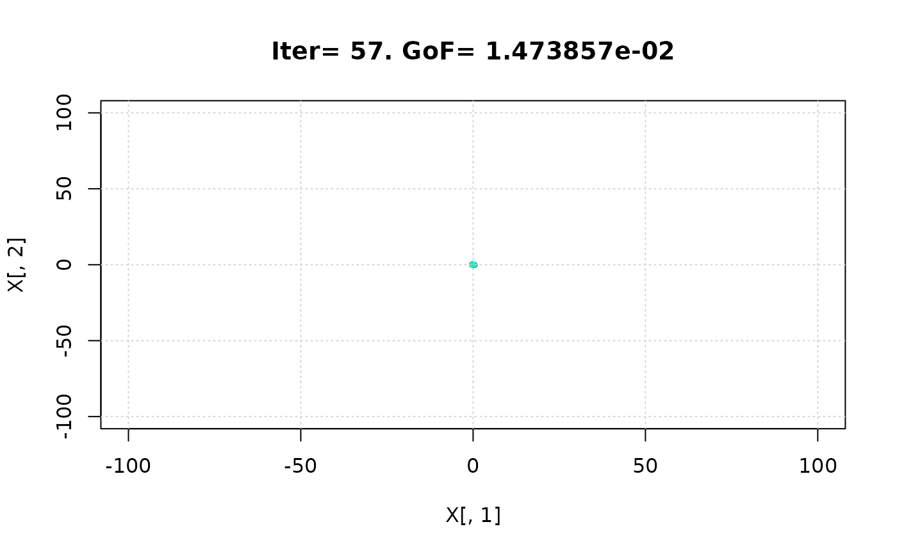

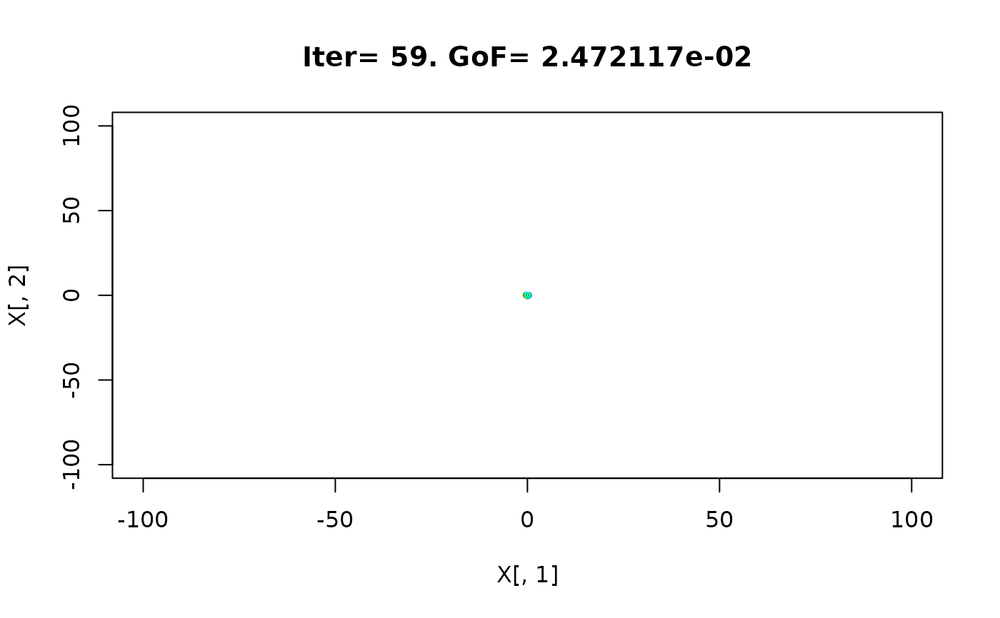


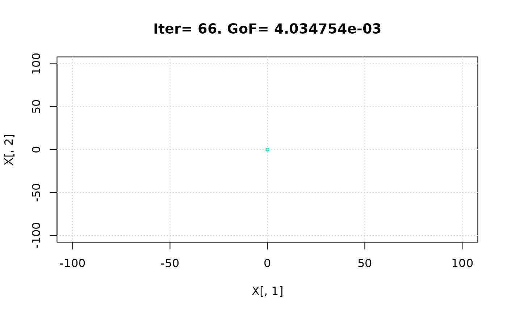


 #> iter:100 Gbest: 6.143E-08 Gbest_rate: 66.13% Iter_best_fit: 6.143E-08 nSwarm_Radius: 3.14E-06 |g-mean(p)|/mean(p): 98.08%
#>
#> [ Writing output files... ]
#>
#> |
#> ================================================================================
#> [ Creating the R output ... ]
#> ================================================================================
#>
#> [ Reading the file 'BestParameterSet.txt' ... ]
#> $best.part.number
#> [1] 30
#>
#> $best.param.values
#> Param1 Param2 Param3 Param4
#> 1 -0.0001079484 0.0001096708 -0.0001897485 -4.174057e-05
#>
#> $best.param.gof
#> [1] 6.14273e-08
#>
# } # donttest END
#> iter:100 Gbest: 6.143E-08 Gbest_rate: 66.13% Iter_best_fit: 6.143E-08 nSwarm_Radius: 3.14E-06 |g-mean(p)|/mean(p): 98.08%
#>
#> [ Writing output files... ]
#>
#> |
#> ================================================================================
#> [ Creating the R output ... ]
#> ================================================================================
#>
#> [ Reading the file 'BestParameterSet.txt' ... ]
#> $best.part.number
#> [1] 30
#>
#> $best.param.values
#> Param1 Param2 Param3 Param4
#> 1 -0.0001079484 0.0001096708 -0.0001897485 -4.174057e-05
#>
#> $best.param.gof
#> [1] 6.14273e-08
#>
# } # donttest END